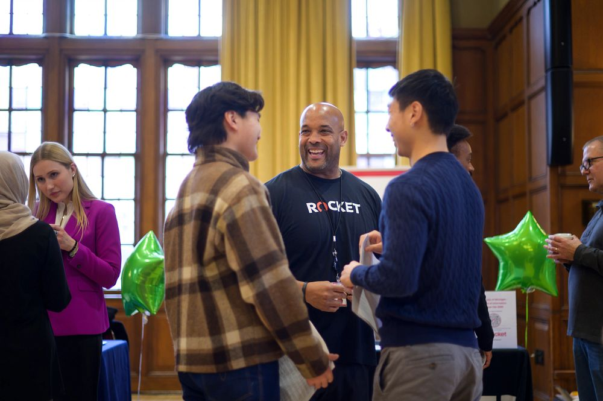

What is Networking?
- Networking is Building Relationships.
- Leverage your circle of friends, family, professors, previous employers, and the University of Michigan Alumni.
- Be curious about the person you are connecting with to learn more about their career. Networking isn’t about winning people over or asking for a job. We recommend asking for informational interviews, which are short meetings or calls with someone in a field of interest to learn more about their job, their industry, their career pathway, and to hear their advice.
- Networking isn’t about winning people over or asking for a job. We recommend asking for informational interviews, which are short meetings or calls with someone in a field of interest to learn more about their job, their industry, their career pathway, and to hear their advice.
Where does Networking Happen?
- In one-on-one conversations with alumni on UCAN (University Career Alumni Network) - This UCC resource is an EASY way to connect with alumni who have volunteered to offer career expertise.
- LinkedIn is another great tool – one you can use to showcase yourself and your career interests. Find out more on building strong profiles.
- Information sessions, panels and networking events with professionals - There are information sessions, networking hours, and ‘coffee chats’ all planned with you in mind. Set reminders to check out the “Events Page” on Handshake each week for the latest additions.
- At Immersions - Travel to employer sites to learn more about their organization and network with their team.
Your Digital Presence
As employers and graduate schools are looking for ways to get to know
candidates virtually, your online “brand” is going to take on even
more significance. You need to consider ways to stand out that are
beyond what you may have done when “in-person” connections were more
the norm.
Here are some quick tips to get you started:
- Manage your online presence: What you tweet or post publicly is part of your professional image, whether or not you intend it to be. Be mindful of your privacy settings and/or consider the audiences that can see your posts before you publish. Bottomline, make sure your content is suitable for future recruiters to review.
- Update on LinkedIn. If you currently consider your LinkedIn profile to have “the basics”, now is the time to develop an effective profile and get active. Recruiters want to see what you have been involved with, what matters to you, who you follow, and what you are interested in. Watch this Learning LinkedIn Video for Students to uncover everything you need to know from creating a profile to growing your network, to following influencers, and sharing content. (LinkedIn account linked to your umich email is required).
- Get active on social media. Consider leveraging social media platforms like Instagram and Facebook to highlight and build upon your industry expertise. Incorporate your professional brand into your bio by using hashtags related to your interest areas, following leaders in your field, and retweeting top industry stories.
- Create a blog and/or website. Remember, employers are looking, online, for additional ways to learn about applicants. Blogs or websites are a great way to showcase your personality, skills, interests, and other important qualities. Find out why this matters to recruiters and check out the following (free!) tools for creating sites: Wix, Squarespace, or Wordpress.
- Maintain your profiles: As you gain more experience, education, and skills, your profiles should change! Revisit your Handshake, LinkedIn, and social media profiles, and update, update, update!